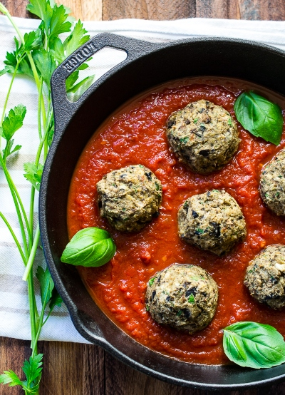
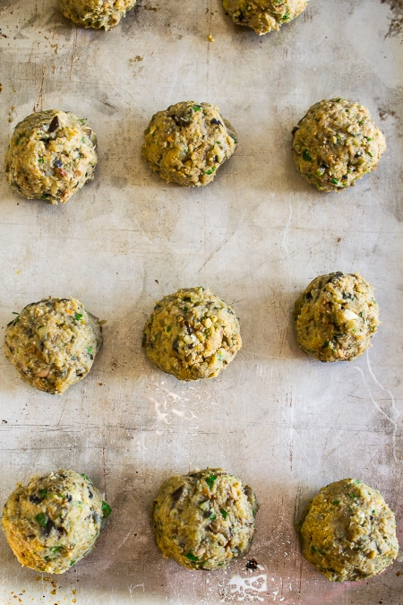
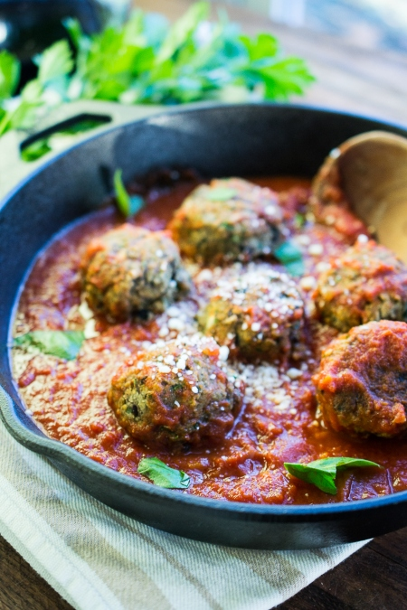

Have you ever wanted to make meat balls without meat? I know it sounds contradictory to have meat balls with no meat but I found an interesting recipe! Sometimes it's important to cut back on meat consumption. Whether you choose to eat less meat for environmental or health reasons or just because you want to mix it up, this recipe is a great alternative for meatballs. Being a vegetarian myself for the past 21 years, I often find myself looking for recipes with meat alternatives. I found this Eggplant and Mushroom 'meatball' recipe on the hanging spoon and wanted to share it. This Recipe was created and adapted by Donna Castellano MS, RDN

| Time | |
|---|---|
| Prep Time | 20 minutes |
| Cook Time | 30 Minutes |
| Total Time | 50 minutes or more ;) |

